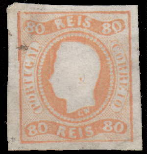
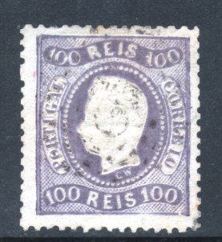
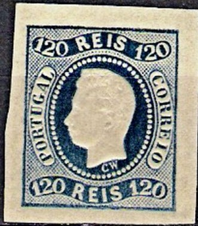
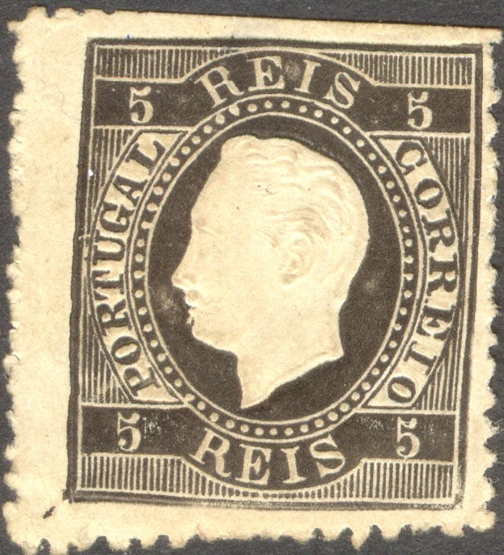

Return To Catalogue - Portugal 1853-1865 - Portugal 1872-1894 - Portugal 1894-1911 - Portugal 1912 onwards - Miscellaneous - Fiscal Stamps
Note: on my website many of the
pictures can not be seen! They are of course present in the catalogue;
contact me if you want to purchase the catalogue.
Imperforate
5 r black 10 r yellow 20 r olive 25 r red 50 r green 80 r orange 100 r lilac 120 r blue
Value of the stamps |
|||
vc = very common c = common * = not so common ** = uncommon |
*** = very uncommon R = rare RR = very rare RRR = extremely rare |
||
| Value | Unused | Used | Remarks |
| 5 r | *** | ** | Reprint: * |
| 10 r | *** | *** | Reprint: * |
| 20 r | *** | *** | Reprint: * |
| 25 r | *** | * | Reprint: * |
| 50 r | R | *** | Reprint: ** |
| 80 r | R | *** | Reprint: ** |
| 100 r | RR | *** | Reprint: ** |
| 120 r | RR | *** | Reprint: ** |
Perforated 12 1/2




5 r black 10 r yellow 20 r olive 25 r red 50 r green 80 r orange 100 r lilac 120 r blue 240 r lilac
Value of the stamps |
|||
vc = very common c = common * = not so common ** = uncommon |
*** = very uncommon R = rare RR = very rare RRR = extremely rare |
||
| Value | Unused | Used | Remarks |
| 5 r | *** | ** | Reprint: * |
| 10 r | *** | *** | Reprint: * |
| 20 r | R | R | Reprint: * |
| 25 r | *** | * | Reprint: * |
| 50 r | R | *** | Reprint: ** |
| 80 r | R | R | Reprint: ** |
| 100 r | RR | *** | Reprint: ** |
| 120 r | R | *** | Reprint: ** |
| 240 r | RR | RR | Reprint: *** |
A very peculiar 'dots in circle' cancel:


These stamps exist with overprint 'ACORES' to be used in Azores.
Reprints
Reprint of the 5 r with curved value label.
Forgeries:

Forgery
A very dangerous forgery exists of the 120 r value. The "2" of the right upper "120" has a flattened right hand upper side. The "1" of this "120" also is slightly higher than in the genuine stamp. The right hand frame has some extra shading at the bottom. Sometimes the ear has blue ink in it. Source: http://www.tabacaria.org/Selos/DLuiz/LuizItalian.htm.This forgery is known as 'Italian forgery' and appeared in the 1970's.
Some other forgeries with imperfect numbers, the "G" of "PORTUGAL" almost closed and the embossed head different also exist (also cancelled). They are printed on very yellowish paper and exist both perforated and imperforate. They have typical cancels as also used by Oneglia forgeries (bars with "1"):

Imperforate forgeries made by Oneglia
5 r black 10 r yellow (1871) 10 r green (1879) 15 r brown (1875) 20 r brown 20 r red (1884) 25 r red 50 r green (1871) 50 r blue (1879) 80 r yellow 100 r lilac 120 r blue 150 r blue (1876) 150 r yellow (1880) 240 r lilac 300 r lilac (1875) 1000 r black (1884)
These stamps have perforation 12 1/2, 13 1/2 or 14.
Value of the stamps |
|||
vc = very common c = common * = not so common ** = uncommon |
*** = very uncommon R = rare RR = very rare RRR = extremely rare |
||
| Value | Unused | Used | Remarks |
| 5 r | * | * | |
| 10 r yellow | *** | *** | |
| 10 r green | *** | ** | |
| 15 r | ** | ** | |
| 20 r brown | *** | * | |
| 20 r red | *** | ** | |
| 25 r | * | c | |
| 50 r green | *** | ** | |
| 50 r blue | *** | ** | |
| 80 r | *** | * | |
| 100 r | ** | * | |
| 120 r | *** | *** | |
| 150 r blue | R | R | |
| 150 r yellow | *** | * | |
| 240 r | RR | RR | Reprint: *** |
| 300 r | *** | *** | |
| 1000 r | *** | *** | |
Overprinted 'PROVISORIO' (1893)

15 r brown 80 r yellow
Value of the stamps |
|||
vc = very common c = common * = not so common ** = uncommon |
*** = very uncommon R = rare RR = very rare RRR = extremely rare |
||
| Value | Unused | Used | Remarks |
| 15 r | * | * | |
| 80 r | *** | *** | |
Overprinted 'PROVISORIO 1893'
80 r yellow '50 rs.' on 80 r yellow '75 rs.' on 80 r yellow
Value of the stamps |
|||
vc = very common c = common * = not so common ** = uncommon |
*** = very uncommon R = rare RR = very rare RRR = extremely rare |
||
| Value | Unused | Used | Remarks |
| 80 r | *** | *** | |
| 50 r on 80 r | *** | *** | |
| 75 r on 80 r | *** | *** | |
The higher valued stamps of this and the next issues with star-shaped holes were used for telegraphic purposes (they are much cheaper than stamps used for mail-purposes).
For more information concerning this embossed issue for the colonies of Portugal, click here.

These stamps exist with overprint 'ACORES' (large of small size)
to be used in Azores.

Oneglia forgery of the 5 r value
Forgeries made by Oneglia (or possible another forger) exist. The numbers and letters are very badly done. The easiest way to recognize them is that there should be two pearls below the 'E' of the upper 'REIS', but in the forgeries there are three pearls below this letter. More information and pictures can be found at: http://www.tabacaria.org/Selos/DLuiz/LuizOneglia.htm. I've also seen such a forgery of the 20 r brown value (http://emblogadafilatelica.blogspot.com/search/label/Falsos%20Filat%C3%A9licos). This forgery is not listed in Oneglia's 1906 pricelist by the way... And Oneglia usually only sold cancelled stamps, so I doubt that the above forgery was actually made by Oneglia.
For stamps of Portugal from 1872 to 1894 click here.


{kind=link}
{kind=link}
{kind=link}
{kind=link}
{kind=link}